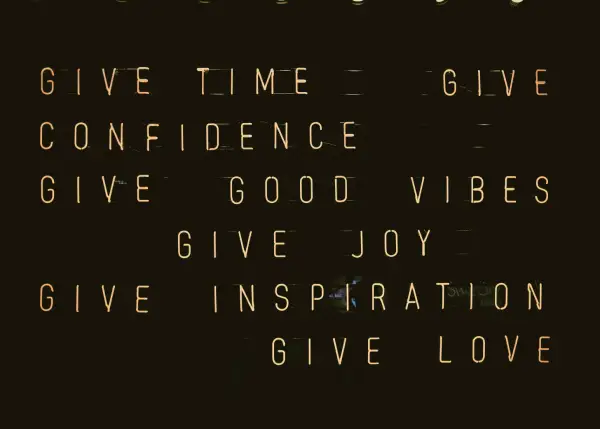

My New Journey To Learn Full-stack Developing With Scrimba
The day I started my full-stack journey, I had zero money and zero experience. Now I’m learning every day and working to become the best version of myself.
The day I started my full-stack journey, I had zero money and zero experience. Now I’m learning every day and working to become the best version of myself.

On my first day of learning, I wrote one line of code, refreshed the browser, and saw my own heading appear on the page. The screen stopped looking like a wall and started looking like a door.

I get my project ideas from small problems I notice in daily life, like “What annoys me, or what could work better?” Then I build the simplest version of the answer and improve it from there.

When I started, code felt like a foreign language, and every error made me want to quit. Now I read the same lines with confidence, because each mistake I fixed along the way turned something confusing into something familiar.

Time is the one thing I can’t get back, so I’ve started treating every hour as something worth planning. Learning a little each day has taught me that steady time beats rushed effort, and that a year of small daily steps can change my whole career.
Every step of this journey, from customer service to writing my first lines of code, has taught me that progress rarely looks like a leap. It looks like showing up, fixing small mistakes, and trusting that the road I’m building today will lead somewhere I’m proud of.
Technology keeps reminding me that every app I use started as someone’s simple idea and a few lines of code. Learning to build with it has shown me that I’m not just a user anymore, I can be someone who creates what others will use.